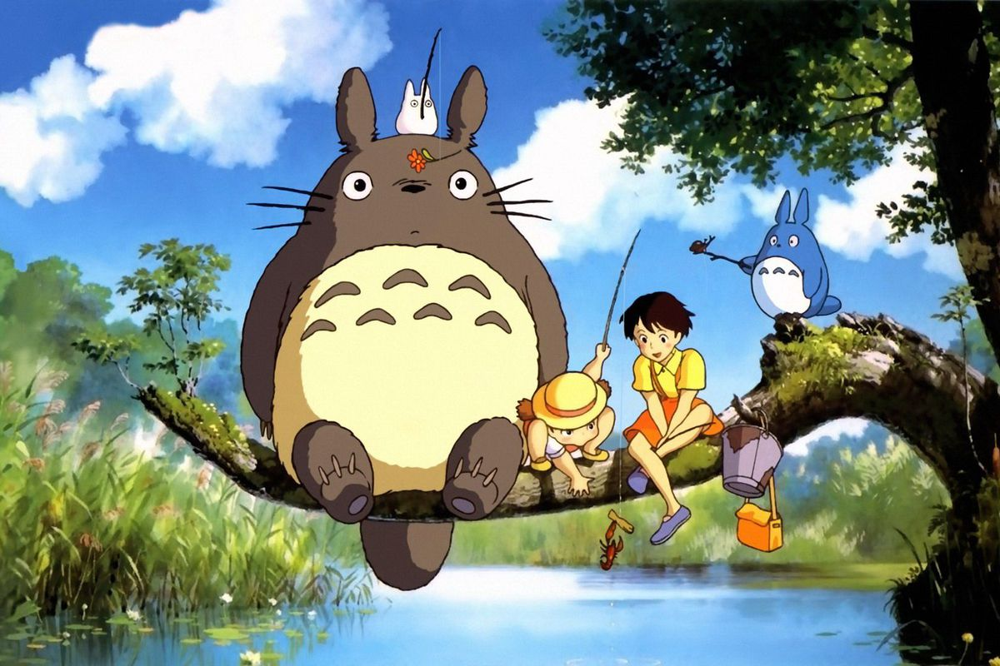

The Best Studio Ghibli movies...
that you need to watch them before you die!
Howl's Moving Castle (2004)
One Thing You Can Always Count On Is That Hearts Change.

Both the book and the film tell the story of an eighteen-year-old girl named Sophie and of young Wizard Howl after they cross paths when the former gets cursed and, consequently, transformed into a ninety-year-old woman by the Witch of the Waste...
More information ♡Spirited Away (2001)
If You Completely Forget...You'll Never Find Your Way Home.
SpiritedAway is an adventure and coming-of-age film in which the main character, a young girl by the name of Chihiro, embarks on a quest to save her family from a supernatural spell. The film opens with Chihiro's family moving to a new town, leaving Chihiro uneasy and sulky...
More information ♡Grave of the Fireflies (1988)
It's not hunger that drives...it's the dream of becoming someone else.

Grave of the Fireflies is a brutally realistic portrayal of life in war-torn Japan, showing the devastating impact of bombings, food shortages, and rationing. Seita and Setsuko die from starvation and malnutrition, with Setsuko's condition deteriorating as she hallucinates and eats marbles
More information ♡My Neighbor Totoro (1988)
Try Laughing. Then Whatever Scares You Will Go Away.
The plot is driven by the sisters' interactions with the magical creatures, their exploration of the natural world around them, and their deepening connection with each other. "My Neighbor Totoro" is renowned for its enchanting and gentle storytelling, as well as its stunning hand-drawn animation.
More information ♡Princess Mononoke (1997)
You cannot change fate.However, you can rise to meet it,if you so choose.
The story follows a young Emishi prince named Ashitaka, and his involvement in a struggle between the gods (kami) of a forest and the humans who consume its resources.
More information ♡Ponyo (2008)
You should never judge others by their looks.
A 5-year-old boy named Sosuke forges a friendship with a goldfish princess named Ponyo, who desperately wants to become human. Follow Sôsuke and Ponyo, a five-year old boy and magical goldfish princess, as the two form an inseparable bond.
More information ♡